Apollo 11
Baseada nos jogadores da Team United,
que receberam uma proposta do Formiga, a equipe começou a tomar forma com Thiago
"Djokovic" Maia, Micael
"micaO" Rodrigues e Luan
"Jockster" Cardoso. Felipe
"Yang" Zhao, vindo da
AceZone E-sports, foi a primeira escolha para o Top,
convidado por micaO.
A busca pelo mid-laner foi um desafio.“Shinigami”,
preferido pelos jogadores, enfrentava uma cirurgia iminente que o impediria de se juntar à equipe.
Gustavo “Minerva”, a segunda opção, passou por testes,
mas Djokovic percebeu uma certa “má vontade” no jogador. Foi então que Yang trouxe Gabriel
"Tockers" Claumann, um velho conhecido da AceZone.
Reforço de peso
A necessidade de um novo jungler era evidente. Os donos da INTZ, confiando na sabedoria
de Djokovic, perguntaram quem poderia ser o substituto ideal. Ele nomeou Gabriel
"Revolta" Henud , que, apesar de uma fase difícil
na carreira, era um nome de peso e a referência que faltava. Rogério e Lucas já estavam em conversas avançadas
Revolta, que fechou acordo com a organização e se juntou à equipe.
Djokovic continuou a jogar por mais dois campeonatos pela organização, enquanto Revolta, já integrado
ao time, assistia aos treinos.
E assim nasceu a lendária line-up conhecida como "Exodia",
a melhor line-up da história do CBLOL.
micaO
Nome: Micael Rodrigues
Data de Nascimento: 5 de Setembro de 1996
Rota: Atirador
Melhores Campeões:
 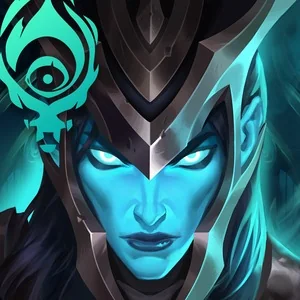Jogos: 37
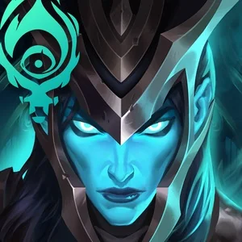Jogos: 37
Win Rate: 56.8%
">
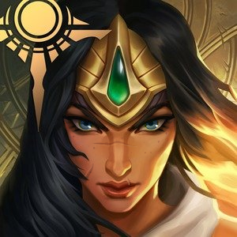Jogos: 37
Win Rate: 75.7%
">
Jockster
Nome: Luan Cardoso
Data de Nascimento: 18 de Fevereiro de 1996
Rota: Suporte
Melhores Campeões:
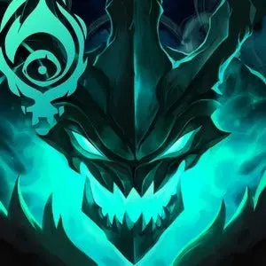Jogos: 34
Win Rate: 54.5%
">
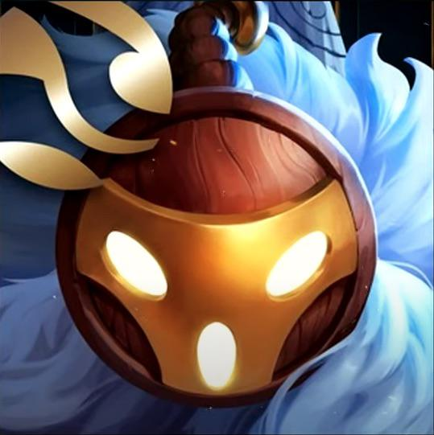Jogos: 20
Win Rate: 75%
">
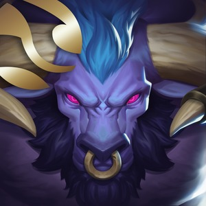Jogos: 25
Win Rate: 68%
">
Yang
Nome: Felipe Zhao
Data de Nascimento: 14 de Abril de 1996
Rota: Topo
Melhores Campeões:
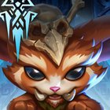Jogos: 33
Win Rate: 69.7%
"
>
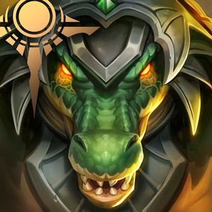Jogos: 30
Win Rate: 56.7%
"
>
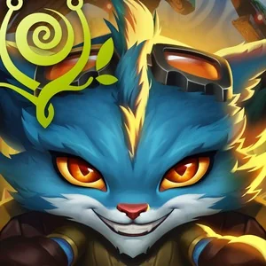Jogos: 19
Win Rate: 73.7%
"
>
Tockers
Nome: Gabriel Claumann
Data de Nascimento: 21 de Agosto de 1996
Rota: Meio
Melhores Campeões:
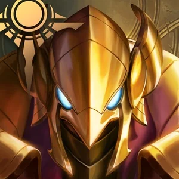Jogos: 33
Win Rate: 69.7%
"
>
 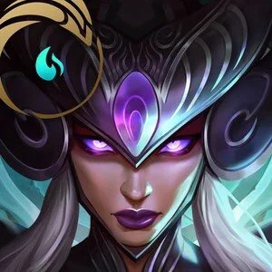Jogos: 18
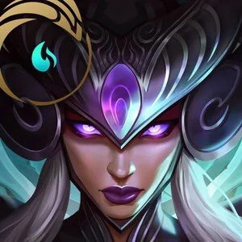Jogos: 18
Win Rate: 72.2%
"
>
Revolta
Nome: Gabriel Henud Cresci
Data de Nascimento: 27 de Dezembro de 1995
Rota: Caçador
Melhores Campeões:
 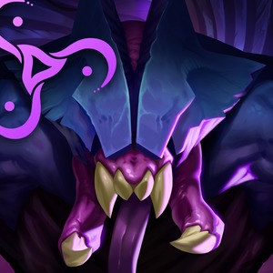Jogos: 36
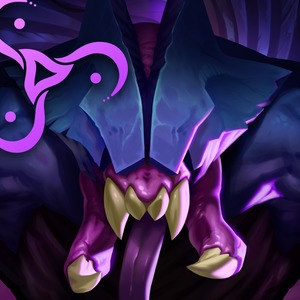Jogos: 36
Win Rate: 75%
"
>
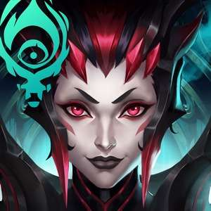Jogos: 46
Win Rate: 60.9%
">
Formato
O começo da era estúdio do Campeonato Brasileiro de League of Legends
. O CBLOL 2015.1 era disputado no seguinte formato :
fase de pontos
- 7 semanas
- jogos unicos.
- Melhor de dois
Mata-mata
- Os 6 melhores times classifcam para o Playoff.
- 1ª e o 2ª colocados avançando para as semi finais.
- Melhor de cinco.
Serie de promoção
- O 8º e o 7º lugares disputam a Promoção Split 2 , contra
o 1º e o 2º lugares do Challenger Circuit, respectivamente.
Fase de Pontos
A INTZ dominou a fase de pontos corridos com uma
soberania impressionante e uma gameplay espetacular. Eles varreram o chão com as equipes mais fracas e tiveram partidas
épicas contra os favoritos paiN e Keyd, surpreendendo as organizações mais poderosas da época. A INTZ terminou a fase de
pontos com 5 vitórias e 2 empates. Seus empates foram contra paiN e
Keyd, e essa campanha incrível rendeu uma partida de desempate pelo primeiro lugar contra a Keyd, que tinha a mesma
pontuação que a INTZ. Em uma partida dominada, a INTZ colocou a Keyd na roda, com um placar de
7 x 19. Todos os intrépidos jogaram muito bem, mas deve-se destacar a
onipresença do Revolta. Com essa vitória, a INTZ garantiu a primeira
colocação no CBLOL 2015 1ª Split.
Tabela do Campeonato
| Lugar |
Time |
Qualificação |
| 1 |
INTZ E-Sports |
Playoffs |
| 2 |
Keyd Stars |
Playoffs |
| 3 |
CNB e-Sports |
Playoffs |
| 4 |
paiN Gaming |
Playoffs |
| 5 |
Dexterity Team |
Playoffs |
| 6 |
KaBuM!Black |
Playoffs |
| 7 |
KaBuM!Orange |
Serie de promoção |
| 8 |
JayOB e-Sports |
Serie de promoção |
Playoffs
A INTZ enfrentou a paiN
na semifinal, seu algoz do ano passado.
O primeiro jogo foi uma demonstração de resiliência, uma das maiores viradas da história do League of Legends
brasileiro. Em um insec do Azir do Tockers e com o
Micao jogando de Ezreal de forma super agressiva, causando
o máximo de dano possível no time da paiN, resultando em um ACE!
Como dizem: O jogo só acaba quando o Nexus cai.
O segundo jogo está muito disputado, mas o Yang
estava imortal com seu Maokai, tankando tudo e todos, uma verdadeira muralha. Isso, somado a um Zhonyas
clutch do Tockers, fez com que a INTZ roubasse o
quinto dragão com o lendário Lee Sin do Revolta
e ganhasse a fight decisiva do jogo para a INTZ.
O primeiro jogo foi uma virada histórica, o segundo extremamente
disputado, mas o terceiro foi um stomp
avassalador da INTZ. A paiN veio com uma estratégia duvidosa, colocando o
Brtt de Urgot, que foi facilmente caunterado com um swap da Kalista do Micao
indo para o top e o Rumble do Yang ficando no bot com o fantástico Thresh do Jockster. Com um mid/jg imperial no early game,
deixando o Kami muito atrás com sua LeBlanc, e o Brtt tomando gap para Micao e Jockster, a INTZ passou como um trator em cima
da paiN Gaming.
Abaxial
Alexander “Abaxial” Haibe foi o técnico
do Exodia, o coach mais vitorioso da
história do CBLOL. Ele chegou à organização através de seu amigo Renato
“Shakarez” Perdigão, que o conectou com a
INTZ.
Chegando de paraquedas no meio do campeonato, “Alex”, como também é conhecido, teve como primeiro
desafio enfrentar a paiN Gaming na semifinal do CBLoL. Sua maior contribuição para o time foi o
Role Swap, uma estratégia que nenhum time
no Brasil sabia como executar na época. Essa estratégia se tornou o carro-chefe para a conquista
do título daquele ano.
FINAL
Com um começo meteórico, os intrépidos chegam a
Florianópolis com a difícil missão de derrotar a Keyd Stars, que na época era o time a ser batido.
Com os coreanos DayDream e
Emperor em excelente forma,a Keyd era claramente a favorita.
Além deles, a equipe contava com contava com, Mylon o melhor top-laner da época,
Takeshi mid-laner referência do cenário, inspiração
para o Tockers, e, é claro,
Loop o melhor suporte do Brasil naquele momento.
Mas a verdade é que a INTZ não tomou
conhecimento, foi um sonoro 3 x 0 clean
do intrepidos contra a keyd. Com um destaque para o Micao
que já era um dos melhores ADCarrys do campeoanto, e ativiou o extindo superior na Final, ele estava
Unstoppable.
Jogo 1 - SUPERAÇÃO
No Draft, a Keyd fez escolhas diferenciadas, como Shyvana top de smite e
Urgot mid, enquanto a INTZ optou por picks
confortáveis como Maokai e
Azir. A INTZ começou com uma estratégia de
role swap e um invade
no Blue da Keyd, mas enfrentou dificuldades iniciais. Aos 20 minutos,
BIG MICAS acertou um supermegamíssil da morte,
garantindo um abate crucial e duas torres para a INTZ. Apesar de erros no
mid game, a Keyd destruiu uma torre do Nexus da INTZ, mas a INTZ conseguiu um ace
e voltou ao jogo. A INTZ fez uma trap na bot-lane,
matando dois jogadores da Keyd.
Com o passar do tempo, a composição de late game
da INTZ começou a dominar, e em uma luta final, na base da Keyd,
Yang e Revolta levaram o Nexus da Keyd.
Jogo 2 - Controle
No draft, a INTZ repetiu o Thresh do
Jockster e o
Gragas do Revolta. A Keyd manteve a
Shyvana do
Mylon no topo, a Annie do Loop
e o Lee Sin do
DayDream. Diferente da partida anterior, a INTZ não fez seu famoso swap.
A INTZ dominou o jogo do começo ao fim sem sustos. Micao
fez outra partida sensacional, desta vez com Tristana
, obtendo vantagem no início do jogo e se tornando uma verdadeira bomba-relógio. Ele foi o
Hardcarry do time e, junto com o
Thresh do Jockster, a dupla intrépida superou
Emperor e Loop.
Aos 24 minutos, em uma luta no Barão, o Gnar do
Yang conseguiu uma ultimate perfeita, acertando todos os jogadores da Keyd.
Micao conseguiu 3 abates e a INTZ parecia um rolo compressor. Quatro minutos depois, a Keyd tentou
novamente fazer o Barão, mas lá estava Revolta,
que roubou o Barão da Keyd de forma incrível. E com um quadrakill
do Tockers, e com o
Revolta levantando da cadeira e gritando O que é que houve ?
, a INTZ deixa a série em 2 a 0.
FINALIZAÇÃO
Texto a ser produzido.